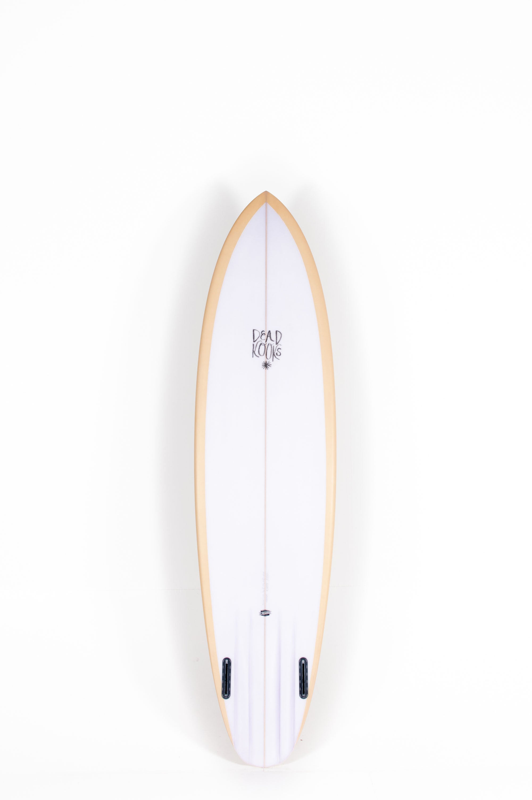

<section class="container product my-5 pt-5">
    <div class="row mt-5">
        <div class="col-lg-5 col-md-12 col-12">
            
        </div>
        <div class="col-lg-5 col-md-12 col-12">
            <h6>Tabla de surf / Fishing</h6>
            <h3 class="py-4">SurfBoard Fishing</h3>
            <h2>200€</h2> 
            <p-rating [ngModel]="val3" [cancel]="false"></p-rating>
                <label for="vertical" style="display: block; margin-bottom:20px;">Cantidad</label>
                <p-inputNumber [(ngModel)]="value19" [showButtons]="true" buttonLayout="horizontal" spinnerMode="horizontal" inputId="horizontal"
                decrementButtonClass="p-button-secondary" incrementButtonClass="p-button-secondary" incrementButtonIcon="pi pi-plus" decrementButtonIcon="pi pi-minus">
                </p-inputNumber>
                <p-button class="ml-2"label="Añadir al carrito" icon="pi pi-shopping-cart" iconPos="right"></p-button>
                <h4 class="mt-5 mb-5">Descripcion</h4>
                <span>If you like surfboards you will probably love twins, you will also presumably love channeled surfboards and appreciate the beauty of long drawn high lines. Well, how does the aesthetics of the Lady Twin do for inspiration?

                    Day dreaming on surfing with class is a must. The moment you stand up on a craft like this your movements transform and you can reach those levels of clarity and lucidity. It does take a stylish surfers to do so and a proper board design helps.</span>
        </div>
    </div> 


</section>